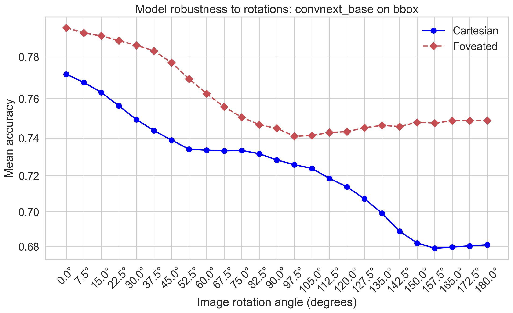

This notebook evaluates the robustness against rotation attacks of the FOVEA network after retraining. We examine how performance degrades as images are rotated and compare these results with the baseline networks tested in script 17_rotation_attack.ipynb to assess the impact of foveation on rotational invariance.
Evaluating FOVEA network robustness across multiple rotation angles¶
[1]:
import retinoto_py as fovea
parms_dict = dict(shuffle=False, do_fovea=True, do_augment=False, batch_size=500)
args = fovea.Params(**parms_dict)
# args
[2]:
all_angles = fovea.np.linspace(0, 180, 25)
all_angles
[2]:
array([ 0. , 7.5, 15. , 22.5, 30. , 37.5, 45. , 52.5, 60. ,
67.5, 75. , 82.5, 90. , 97.5, 105. , 112.5, 120. , 127.5,
135. , 142.5, 150. , 157.5, 165. , 172.5, 180. ])
[3]:
all_model_names = ['convnext_base']
all_datasets = ['bbox']
all_model_names, all_datasets
[3]:
(['convnext_base'], ['bbox'])
[4]:
delta_angle = all_angles[1] - all_angles[0]
all_angles_min = all_angles - delta_angle / 2
# all_angles_min, all_angles_min + delta_angle, delta_angle
[5]:
for dataset in all_datasets:
for model_name in all_model_names:
npz_filename = args.data_cache / f'37_rotation-attack_name={model_name}_dataset={dataset}.npz'
print(f'Rotation attack for {model_name=} and {dataset=} \t {npz_filename=}')
%ls -l {npz_filename}
# %rm {npz_filename} # FORCING RECOMPUTE
if npz_filename.exists():
with fovea.np.load(npz_filename) as data:
attack_angle = data['attack_angle']
attack_success = data['attack_success']
all_results = data['results']
else:
args = fovea.Params(shuffle=False, do_fovea=True, do_augment=False, model_name=model_name, batch_size=500)
model_filename = args.data_cache / f'32_fovea_model_name={args.model_name}_dataset={dataset}.pth'
model = fovea.load_model(args, model_filename=model_filename)
model.eval()
VAL_DATA_DIR = args.DATAROOT / f'Imagenet_{dataset}' / 'val'
val_dataset = fovea.get_dataset(args, VAL_DATA_DIR)
val_loader = fovea.get_loader(args, val_dataset)
# https://pytorch.org/docs/stable/generated/torch.nn.CrossEntropyLoss.html
criterion = fovea.torch.nn.CrossEntropyLoss(reduction='none')
all_results = fovea.np.empty((len(all_angles), len(val_loader.dataset)))
all_logits = fovea.np.empty((len(all_angles), len(val_loader.dataset), len(val_dataset.classes)))
all_losses = fovea.np.empty((len(all_angles), len(val_loader.dataset)))
all_labels = []
outer_progress = fovea.tqdm(
enumerate(zip(all_angles_min, all_angles_min + delta_angle)),
total=len(all_angles_min),
desc="Validating Angles",
leave=False
)
for i_angle, (angle_min, angle_max) in outer_progress:
val_dataset = fovea.get_dataset(args, VAL_DATA_DIR,
angle_min=angle_min, angle_max=angle_max)
val_loader = fovea.get_loader(args, val_dataset)
# correct_predictions = 0
# total_predictions = 0
image_count = 0
for images, true_idxs in fovea.tqdm(val_loader,
desc=f"Angle [{.5*(angle_min+angle_max):.1f}°]",
position=1, leave=False):
images = images.to(args.device)
true_idxs = true_idxs.to(args.device)
# Get predictions (no need for gradients)
with fovea.torch.no_grad():
if i_angle==0: all_labels.extend([l.item() for l in true_idxs])
outputs = model(images)
all_logits[i_angle, image_count:(image_count + images.size(0)), :] = outputs.cpu().numpy()
_, predicted_labels = fovea.torch.max(outputs, dim=1)
correct_predictions_in_batch = (predicted_labels == true_idxs).cpu().numpy()
all_results[i_angle, image_count:image_count + images.size(0)] = correct_predictions_in_batch
loss = criterion(outputs, true_idxs)
all_losses[i_angle, image_count:(image_count + images.size(0))] = loss.cpu().numpy()
image_count += images.size(0)
outer_progress.set_postfix(last_acc=f"{all_results[i_angle, :].mean():.4f}")
attack_angle = all_losses[:, :len(all_labels)].argmax(axis=0)
attack_idx = all_logits[attack_angle[:len(all_labels)], fovea.np.arange(len(all_labels)), :].argmax(axis=1)
attack_success = (attack_idx == all_labels)
fovea.np.savez(npz_filename,
attack_angle=attack_angle,
attack_success=attack_success,
results=all_results)
Rotation attack for model_name='convnext_base' and dataset='bbox' npz_filename=PosixPath('cached_data/37_rotation-attack_name=convnext_base_dataset=bbox.npz')
-rw-r--r--@ 1 laurent staff 16815784 17 mai 01:00 cached_data/37_rotation-attack_name=convnext_base_dataset=bbox.npz
Analysis: Mean accuracy vs. rotation angle¶
[ ]:
# --- Create the Plot ---
fig, ax = fovea.plt.subplots()
for dataset in all_datasets:
color = fovea.params.all_datasets_color[0] if len(all_datasets)==1 else fovea.params.all_datasets_color[all_datasets.index(dataset)]
color = fovea.params.all_datasets_color[0] if len(all_datasets)==1 else fovea.params.all_datasets_color[all_datasets.index(dataset)]
# 1. Plot Baseline (from script 17)
for model_name in all_model_names:
npz_baseline = args.data_cache / f'17_rotation-attack_name={model_name}_dataset={dataset}.npz'
if npz_baseline.exists():
with fovea.np.load(npz_baseline) as data:
acc = data['results'].mean(axis=1)
ax.plot(all_angles, acc, marker='o', linestyle='-', color=color, lw=2, markersize=8, label=f'Cartesian')
# 2. Plot Foveated Retrained (from script 37)
for model_name in all_model_names:
npz_fovea = args.data_cache / f'37_rotation-attack_name={model_name}_dataset={dataset}.npz'
if npz_fovea.exists():
with fovea.np.load(npz_fovea) as data:
acc = data['results'].mean(axis=1)
ax.plot(all_angles, acc, marker='D', linestyle='--', color='r', lw=2, markersize=8, label=f'Foveated')
# --- Finalize the Plot ---
ax.set_xlabel("Image rotation angle (degrees)")
ax.set_ylabel("Mean accuracy")
ax.set_title(f"Model robustness to rotations: {model_name} on {dataset}")
ax.set_yscale('logit')
ax.set_xticks(all_angles)
ax.set_xticklabels([f'{a:.1f}°' for a in all_angles], rotation=45)
ax.legend(frameon=False)
fovea.savefig(fig, name='37_attack_comparison', figures_folder=args.figures_folder)

Analysis: Per-image rotation attack success rate¶
[7]:
with fovea.np.load(npz_filename) as data:
# Accéder directement aux tableaux
attack_angle = data["attack_angle"]
attack_success = data["attack_success"]
all_results = data["results"]
[8]:
attack_angle.shape, attack_success.shape
[8]:
((80000,), (80000,))
[9]:
attack_angle[:10], attack_success[:10]
[9]:
(array([12, 18, 16, 13, 20, 1, 3, 6, 21, 7]),
array([ True, False, True, True, True, True, True, True, True,
True]))
[10]:
fovea.np.unique(attack_angle)
[10]:
array([ 0, 1, 2, 3, 4, 5, 6, 7, 8, 9, 10, 11, 12, 13, 14, 15, 16,
17, 18, 19, 20, 21, 22, 23, 24])
[11]:
all_angles
[11]:
array([ 0. , 7.5, 15. , 22.5, 30. , 37.5, 45. , 52.5, 60. ,
67.5, 75. , 82.5, 90. , 97.5, 105. , 112.5, 120. , 127.5,
135. , 142.5, 150. , 157.5, 165. , 172.5, 180. ])
[12]:
attack_success
[12]:
array([ True, False, True, ..., True, True, True], shape=(80000,))
[13]:
attack_success.mean()
[13]:
np.float64(0.621925)
[14]:
all_model_names
[14]:
['convnext_base']
[15]:
fovea.params.all_datasets
[15]:
['full', 'bbox']
[16]:
for dataset in fovea.params.all_datasets:
for model_name in all_model_names:
npz_filename = args.data_cache / f'17_rotation-attack_name={model_name}_dataset={dataset}.npz'
with fovea.np.load(npz_filename) as data:
attack_success = data['attack_success']
print(npz_filename, attack_success.mean())
cached_data/17_rotation-attack_name=convnext_base_dataset=full.npz 0.65474
cached_data/17_rotation-attack_name=convnext_base_dataset=bbox.npz 0.58965
[17]:
for dataset in all_datasets:
for model_name in all_model_names:
npz_filename = args.data_cache / f'37_rotation-attack_name={model_name}_dataset={dataset}.npz'
with fovea.np.load(npz_filename) as data:
attack_success = data['attack_success']
print(npz_filename, attack_success.mean())
cached_data/37_rotation-attack_name=convnext_base_dataset=bbox.npz 0.621925
[18]:
attack_angle
[18]:
array([12, 18, 16, ..., 19, 10, 4], shape=(80000,))
[ ]: